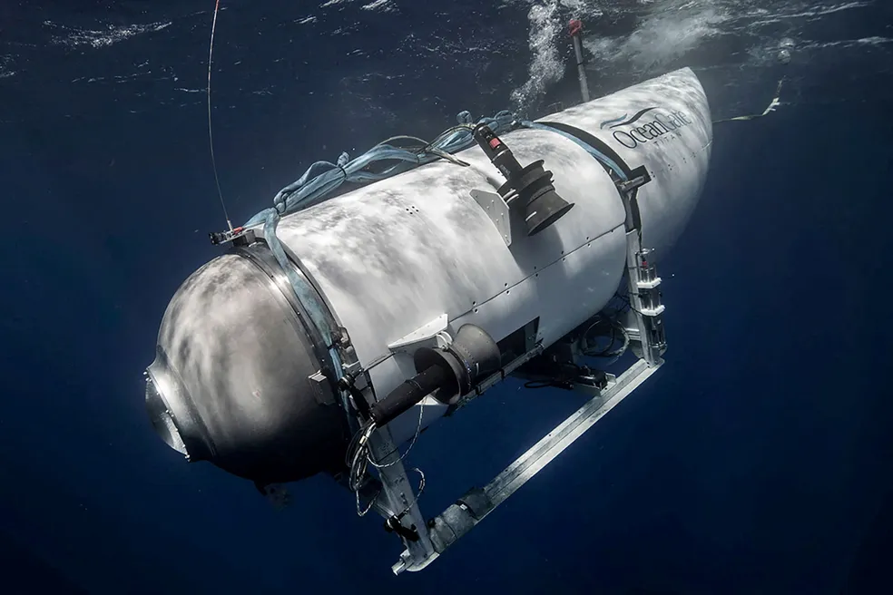

Mesmo depois de 10 dias do acidente do submarino, a OceanGate não cancelou o anúncio da viagem ao Titanic em 2024.
A passagem, cujo valor é de cerca de R$ 1 milhão, abrange acomodações privativas, todos os treinamentos essenciais, equipamentos de expedição e todas as refeições a bordo. No entanto, o preço não inclui hotéis e refeições antes da partida, bem como seguro de viagem e pessoal.
A OceanGate, a empresa responsável pelo submarino Titan, que sofreu uma implosão e resultou na morte de cinco pessoas, continua anunciando em seu site de expedições duas viagens ao Titanic em 2024. A primeira está programada para ocorrer entre os dias 12 e 20 de junho, enquanto a segunda será entre os dias 21 e 29 de junho.
De acordo com o anúncio, o valor do bilhete é de US$ 250 mil (aproximadamente R$ 1 milhão) e inclui:
- Um mergulho submersível;
- Acomodações privadas;
- Todos os treinamentos necessários;
- Equipamento de expedição;
- Todas as refeições a bordo.
No entanto, o valor não inclui hotéis e refeições antes da partida, bem como seguro de viagem e pessoal. O portal norte-americano TMZ obteve um documento que isenta a empresa de qualquer responsabilidade por possíveis acidentes.
De acordo com o contrato obtido pelo TMZ, os tripulantes que participarem da viagem aos destroços do Titanic, que dura aproximadamente oito dias, precisam assinar a declaração: "Eu, ___________________, reconheço que me inscrevi voluntariamente para participar de uma operação submersível organizada pela OceanGate Expeditions".
A embarcação tem capacidade para até seis pessoas, normalmente consistindo de um piloto e cinco passageiros. A viagem tem duração de oito dias, sendo os dois primeiros em um grande barco, que leva os passageiros até o local do naufrágio.
O trajeto tem início na costa de Newfoundland, no Canadá, e percorre 600 km pelo Oceano Atlântico. Uma vez no local, o submersível leva aproximadamente oito horas para realizar o passeio completo (incluindo o retorno à superfície) até os destroços, que estão a uma profundidade de 3.800 metros.
O s1 entrou em contato com a empresa para confirmar as viagens do próximo ano, mas não obteve resposta até a publicação desta matéria.
Segundo a OceanGate, foram planejadas 18 expedições para o local do naufrágio em 2023, sendo que na primeira deste ano cinco pessoas desapareceram. As viagens foram vendidas após a empresa realizar mergulhos bem-sucedidos em 2021 e 2022.
De acordo com um economista, a OceanGate possui uma dívida milionária e pode fechar as portas após o acidente. A expedição turística para visualizar os destroços do Titanic a bordo de um submarino desapareceu no Oceano Atlântico em 18 de junho. E na última quinta-feira (22), a Guarda Costeira dos Estados Unidos informou que a embarcação implodiu e todos a bordo morreram.